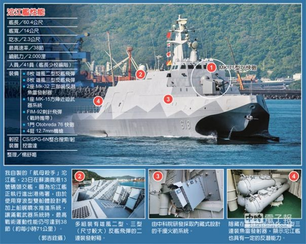
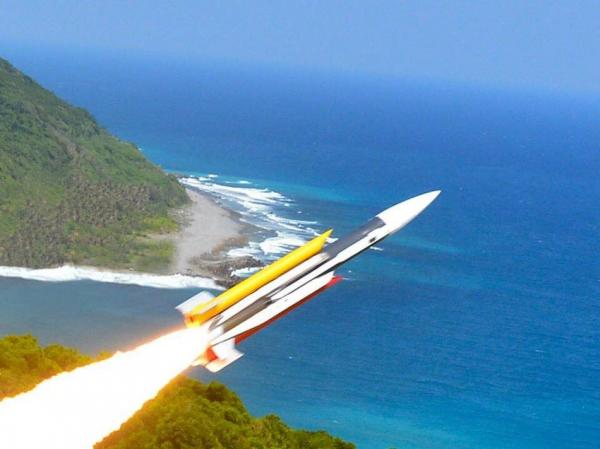
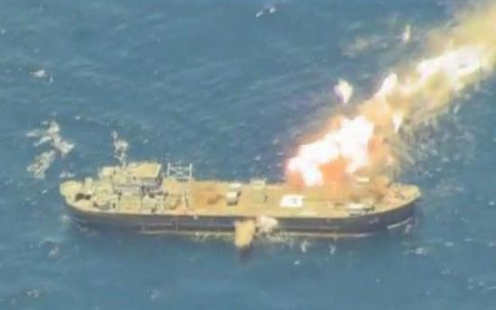

昨天（2014年十二月23日），國軍的新型飛彈巡邏艦沱江號交艦服役。國軍秉承近年來哄騙忽悠百姓的傳統，不但把沱江艦吹捧成“航母殺手”，而且還不敢具名，由各媒體不約而同的報導了這個“外界”給的稱號，如這一篇：http://www.nownews.com/n/2014/12/23/1554901 。幾艘500噸級的飛彈艦就能威脅航母戰鬥群？讀者大概早已存疑；我在此給個簡單的分析。

雄風二型是中型反艦飛彈，雄風三型是大型反艦飛彈，卻都只有小型飛彈的射程。500噸的沱江級比飛彈快艇的甜區（200噸）大两倍以上，速度卻不能更高。載彈量雖大，卻没有防空能力，在戰時得以發射第4枚以後的飛彈機率極小。
我在前文《從1996台海危機到東風21D反艦彈道飛彈》裡評論共軍的022級飛彈艇時，曾提到“任何飛彈快艇都有兩個致命缺點：首先是防空能力薄弱，沒有空優的情況下只能靠數量做自殺式攻撃；其次是航程太短，即使有空優掩護也只能在近岸巡邏”。而500噸級的沱江艦就是典型的飛彈快艇，既没有防空能力，也没有執行反潜任務的可能（没有自帶聲納，也没有直升機機庫），唯一的功能就是發射反艦飛彈。在戰時如果有空優，干脆用空射反艦飛彈豈不更快更即時？如果没有空優，再快的飛彈艇也絶對跑不過飛機。而且飛彈艇的噸位小，國際的新趨勢是覺得連由戰機發射反艦飛彈來打撃，都是殺鶏用牛刀，最近幾年還開發了直升機發射的超小型飛彈專門對付快艇。沱江艦所載的雄風飛彈，只有不到150公里的射程；這别提航母戰鬥群的1000公里防禦半徑，連一般驅逐艦或護衛艦的艦載直升機的200多公里巡邏半徑都無法攻破。10艘沱江艦合起來只要能打沉一艘尋常敵艦，就謝天謝地了，所謂航母殺手真不知從何說起。

雄風三型飛彈，也曾被國軍吹成“航母殺手”。其實它是美軍1960年代開始研製的ALVRJ的仿製版。ALVRJ射程太短，低空飛行時只有不到75公里，高空飛行才能達到所謂的最大射程，但是因為其飛行速度在衝壓火箭中也是最慢的，所以很容易被近防系統攔截，以致美軍35年前就拒絶裝備。中科院連換成新式的固態燃料都做不到，當然也就不能採用新一代的一體燃燒室（沿用ALVRJ的第一代液態沖壓燃料+固態火箭一體燃燒室），因而必須加裝助推火箭（圖中的黄色圓柱體），進一步增大體積和重量。
正因為飛彈艇對軍機和直升機有極大的軟肋，真正須要打仗的海軍都要求它必須够小够便宜，以便可以大量部署，以數量取勝。可是沱江艦和一般飛彈快艇最大的不同就是它又大又貴。飛彈艇的性能指標裡，最重要的不是噸位，也不是速度，更不是載彈量，而是價銭，其次則是飛彈射程，國軍剛好反其道而行，在價銭上遠高於世界所有其他飛彈艇數倍，飛彈射程則在現代反艦飛彈的最低端。這様的武器完全没有實戰效益，真不知國軍那幾百個將官的腦袋裡裝的是什麼。

上個月雄風三型打靶的照片。飛彈從左下方撃中充當靶艦的LST，從右上方穿出艦體後才爆炸，顯然引信有問題。爆炸的火球很小，與共軍7系列的小型反艦飛彈相當，即使引信工作正常，也頂多只能重創4000噸以下的目標。自貼航母殺手的稱號，實在無耻。
最後補充一點：航母是用來打撃離岸2000公里以上的目標用的。在2000公里内，可以用陸基飛機+空中加油，性能好、價銭低、數量多。台灣全島都在大陸東南沿海機場的500公里半徑内，共軍連加油機都用不著，絶對没有理由動用航母來對台作戰，所以所謂的航母殺手，根本就是個偽命題，是國軍胡扯出來讓無知百姓自我感覺良好的。而胡扯、無知和自我感覺良好，也就是現代台灣的寫照。
crztrader
2016-07-01 00:00
引文
我想引信是真的太遲鈍了。
大陆有篇文章, 列举了较为实质的疑点如下:
www.weibo.com/.../show //“台湾军方已经找到替罪羊，一名海军中士。”我挥了下报纸。
“华生，中士无法完成这一切，导弹发射，并不是你射大波波娃这么简单。”
“呃，……那也得先脱裤子，那些技术分析文章看得我头疼。”
“台湾方面最早报道说需要火控钥匙，后来又说雄风三号不需要。”福尔摩斯拉开了窗帘。//
//碰巧发射流程出现漏洞，碰巧中士单独操作，碰巧操作室没有监控录像，碰巧衡山指挥室已有预案……//
尤其是 "火控鈅匙", 我是外行不知箇中奥秘, 王兄以为如何?
“火控鑰匙”的説法，目前正反面都有。我個人覺得這種戰術武器，可能不需要那麽嚴密的管制。
@南山卧虫
根据“国防部误射事件Q&A”（
news.ltn.com.tw/news/politics/breakingnews/1749620 ）：
十、舰长为何未谨慎做好飞弹发射钥匙管制？
答：本型飞弹发射系统并未设置发射钥匙，亦不需以发射钥匙管制发射。前新江舰舰长吕礼诗先生所言：『飞弹发射必需经过重重关卡，其中最后一关「发射钥匙」应该在舰长…』等言，均系对系统之错误发言，曾担任同型舰舰长的吕先生，对舰上装备如此的不瞭解，随意误导社会大眾，本部深表遗憾。
按国防部说法是没有钥匙，但这实在有点匪夷所思，曾担任同型舰舰长的人，连钥匙有或没有这样基本的事实都不知道？
這麽關鍵而明顯的議題，如果臺灣媒體不挖到底，那就是他們已腐爛到底的明證。
mindarla
2016-07-03 00:00
感觉台湾现在有种集体耍无赖或是侥幸的心理，既然台海问题是中美博弈，那在博奕有结果之前都不会有事，反正本来就守不住，不管是相安无事或是互相搞小动作，都不影响大局，那我现在每天噁心你，赚点嘴皮子爽也好，96年到现在，要真会动手早就动手了。
其實大陸還不急著武統，是事實。臺灣無禮而辱大鄰，也早已是全民運動。
有没有"火控钥匙", 似乎是外界突破真相的缺口.
是，我也想再等幾天看看。衹怕臺灣媒體又是一窩蜂，兩三天後就把事情忘了。
我胡乱的的猜测一下; 演习如实战, 那所有发射的程序都要如实的走上一遍包括装上火线. 对吧? 然而毕竟是演习; 按钮之前一切操作都可以是真的, 除了火线. 而问题也一定是出在这里; 我不知道是否有演习专用的假火线, 或演习时在这部份有专门的管制?
是。我在前面也已提過，武統并不是在等藉口，而是在等世界大勢的轉移。即使這次誤殺的是大陸人，也仍然衹有外交後果，不是軍事後果。
转贴：
最近一直公开评论的前新江舰舰长吕礼诗说，需要插入钥匙才能发射，但却遭到海军否认。查了下资料，新江舰（PG-606）是四艘雄风二型飞弹改装型（雷达与作战系统是从武进三移植），而且是第一艘接受改装的，这大概在2005年被外界确认改装。之后改装雄风三型的是另外七艘（首舰锦江号没有做过任何改装）。如果钥匙由舰长保管，吕礼诗不可能记错，所以一种可能是：2010年代那几艘锦江改装雄风三型，发射流程比先前简化而不需要钥匙，但吕礼师已经退伍（要查证）所以不清楚。应该看看一级舰的舰长的说法，他们飞弹更多（例如过几天黄河是否会说话）。
另一点值得称道的是，很少看到黄河第一时间就评论一些事情，他会等信息比较完整之后再发表评论（毕竟不是媒体人）
...黄河舰长发话了。果然证实雄三的实体隔离措施只剩火线，没有钥匙了。
http://www.haodoo.net/?M=hhd&P=561 小小的发射钥由舰长保管，较大的火线由兵器长收藏。
当年我担任张骞舰舰长，成军第一天，中科院非常神秘又慎重地将这把钥匙交给我。
我随后便将它锁进舰长室保险箱。
也因此，军舰想要发射飞弹，理论上至少需要三个人配合，那就是舰长、兵器长，以及飞弹发射台操控手(请参见图一)──若要这三个人同时犯错，我想机率即使不等于零，也趋近于零。
不过，图一是旧式雄风发射系统，雄三採用新型设计，「扳机保护盖」与「发射钥」已被软体(控制面板)取代。
即使简化前两项硬体设计，雄三仍具备「火线」这最后一道关卡。
這聽來很合理。
"演习视同作战，但是仍然必须用训练模式。"
军纪不严，训练不足的后果就是这中士对操控精密武器毫无概念，只知要熟练操作程序，应付演习要求。如同对硕士学位口试，问到为什么要用如此的研究方法，常听到的回答是"不知道，是老师学长要我这样做的"。
不过，高位者如首相总统之流者，有时的表现也如同那飞弹中士一般，甚至更糟，死也不承认是误判:A defiant Tony Blair defended his decision to go to war in Iraq in 2003 following the publication of a devastating report by Sir John Chilcot, which mauled the ex-prime minister’s reputation and said that at the time of the 2003 invasion Saddam Hussein “posed no imminent threat”.
================================
www.theguardian.com/... 現代民主社會的媒體報導，短視而膚淺，重姿態而輕内涵，結果就是獎勵抵賴硬拗，臺灣不也是如此？
以雄三的贴海性能和射程而言, 它的运用我认为比较适合于对应中共的渡海入侵. 但不是装配在舰艇上而是岸基机动; 因为后者容易隐蔽. 而其打击的目标应是大型的登陆舰补给舰以及护航舰等等; 意思是说只用在反登陆作战而为中远程的攻击武器. 如果装备三百枚, 那不过是十亿美元; 配置是三分之一在澎湖, 三分之一在台湾东北; 三分之一沿着中部的山线配置; 后两部分的打击距离既使因为后退最远应该也能打到海峡中线做所谓的半渡而击.
但願這個部落格能幫助更多的臺灣讀者認清現實。
crztrader
2016-07-10 00:00
军方说法:
這是騙人的昏話。延遲引信衹是延遲幾公尺，如果引爆了，小小的漁船一樣會粉碎。
evergrand
2016-07-17 00:00
动图里那个导弹击中靶船后，爆炸怎么发生在导弹尾部?弹头装药部飞出去老远以后尾部才爆炸，会不会战斗部没装药？火焰是残余燃料的爆炸？
這個動圖很模糊，我看不出是尾部爆炸。半穿甲彈頭的裝藥，是專門集中爆炸力向側面展開，所以後面的彈體含發動機可能穿過火球而留下那條煙火痕跡。
我已經澄清過了，所謂“2025前後”這個關頭，並不專指主動武統，也包含美國安排台方挑釁而挑起戰爭；事實上，後者的威脅遠遠更大。
2023-08-19 03:49 回复